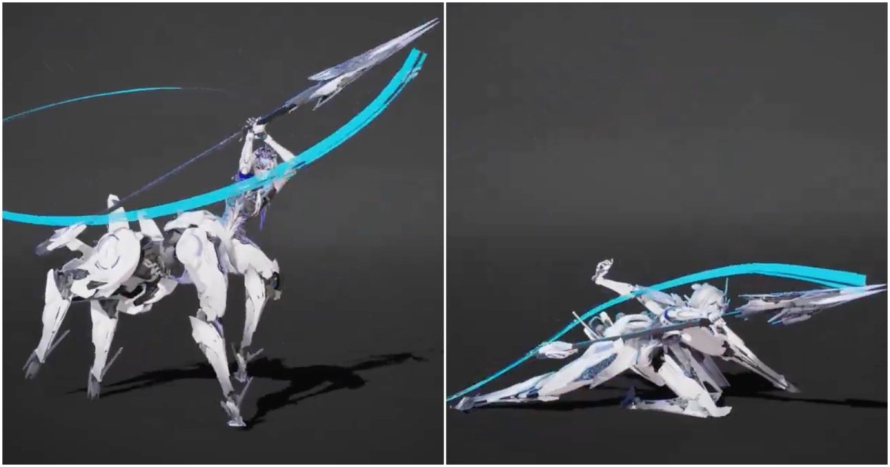

Mecha Centaur 長槍攻擊：多角度展示高速戰鬥動畫的重量、弧線與節奏
Martin Chang 的 Rosetta 長槍動畫以多角度展示高速連擊，適合作為 stylized gameplay attack 的 pose readability、arcs 與 timing 參考。

動畫 ★★★★☆
情報簡析
BRIEF｜來源已驗證，但目前證據深度不足以支持完整 Production Analysis。
動畫參考價值
這組 Maya 動畫雖沒有完整技術拆解，但多角度展示長槍連擊、四足／半人馬重心轉移與高速 recovery，對 combat animation 的 silhouette、arc、anticipation 與 impact timing 有很高參考價值。
限制
來源屬高品質 showcase，沒有 rig、curve、frame breakdown 或 production integration 細節，因此不應升級成完整工作流分析，依契約列 BRIEF。